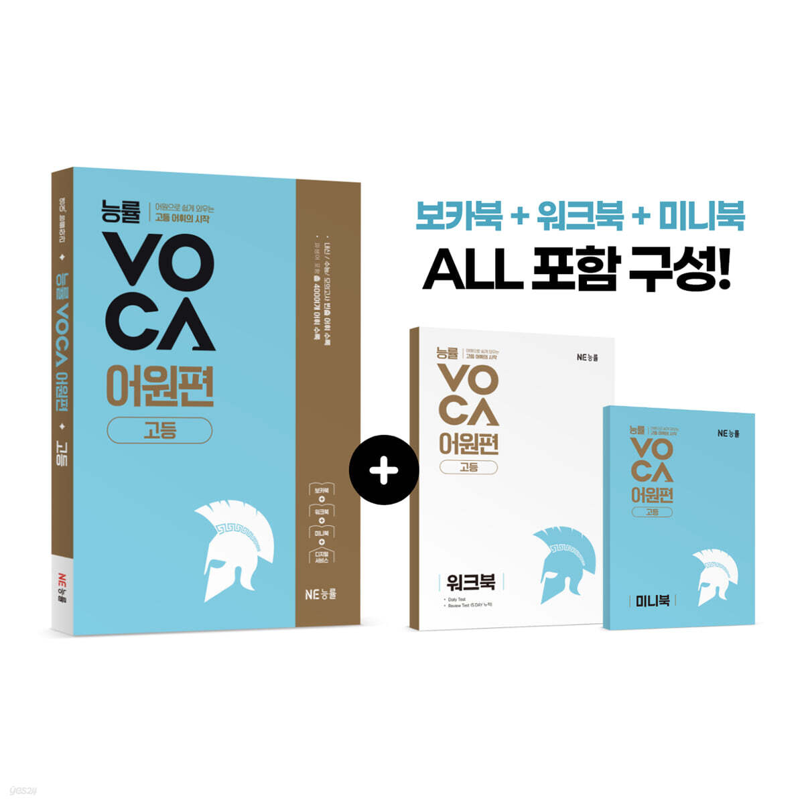
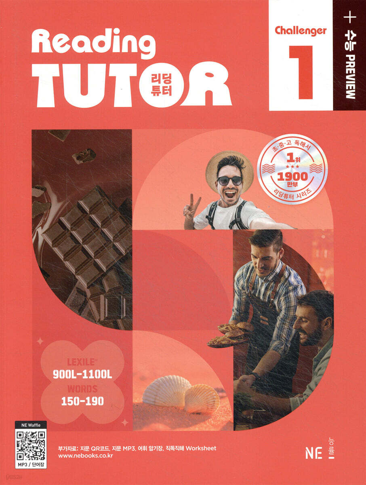
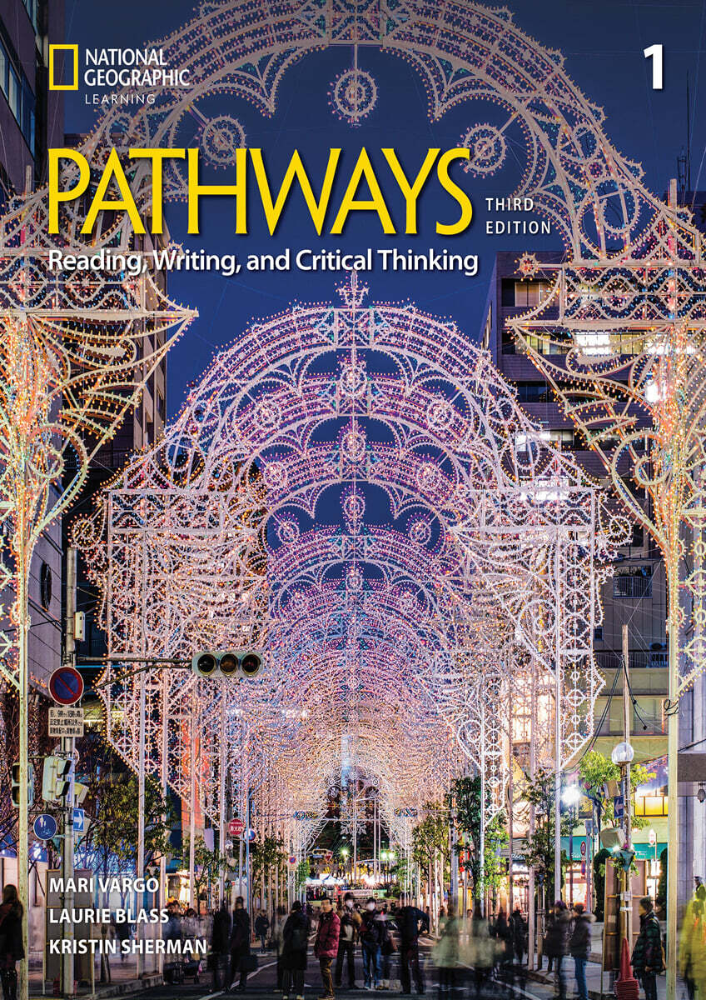

서점에서 검증된 유명 교재 라인업
국내 중·고등학생이 가장 신뢰하는 필독서부터 글로벌 명문 대학의 공인 교재까지,
최고의 텍스트로 완성된 어휘와 독해의 정수를 한곳에서 학습하세요.

능률 VOCA 2025
어원편 & 중등 고난도 2권역
접두사·어근·접미사의 원리로 외우는 국내 1위 필독 어휘서. 기출 빈출도 100% 반영.

리딩튜터 챌린저
Reading Tutor Challenger 1~3
최신 내신 및 수능 트렌드 독해 지문과 직결된 상위권 실전 심화 보카 라인업.

Oxford 3000 & 5000
CEFR A1 ~ C1 완전체
영국 옥스퍼드 대학 출판부 공인. 영어 모국어 화자 텍스트의 85% 이상을 차지하는 핵심 어휘.

Pathways 1600
National Geographic Level 1~4
과학, 인류학, 환경 등 세계 최고 수준의 아카데믹 리딩 및 비판적 사고 훈련을 위한 어휘.
* 능률 VOCA 고등편(고등 기본 · 수능 필수 · 수능 고난도) 단어장 추후 순차 업데이트 예정